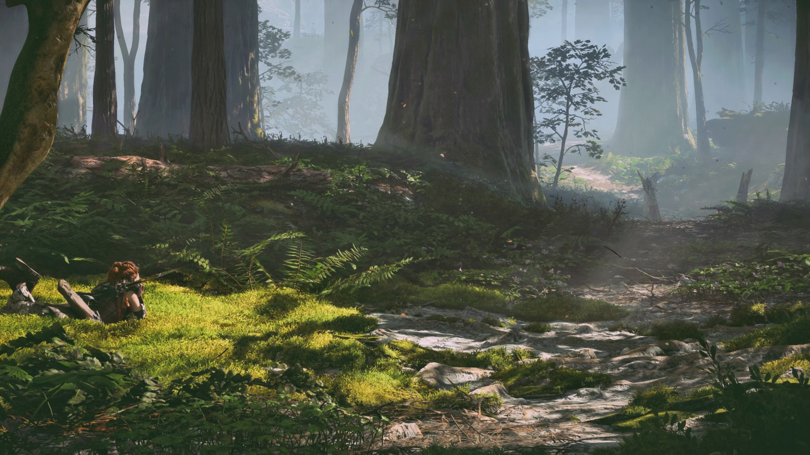
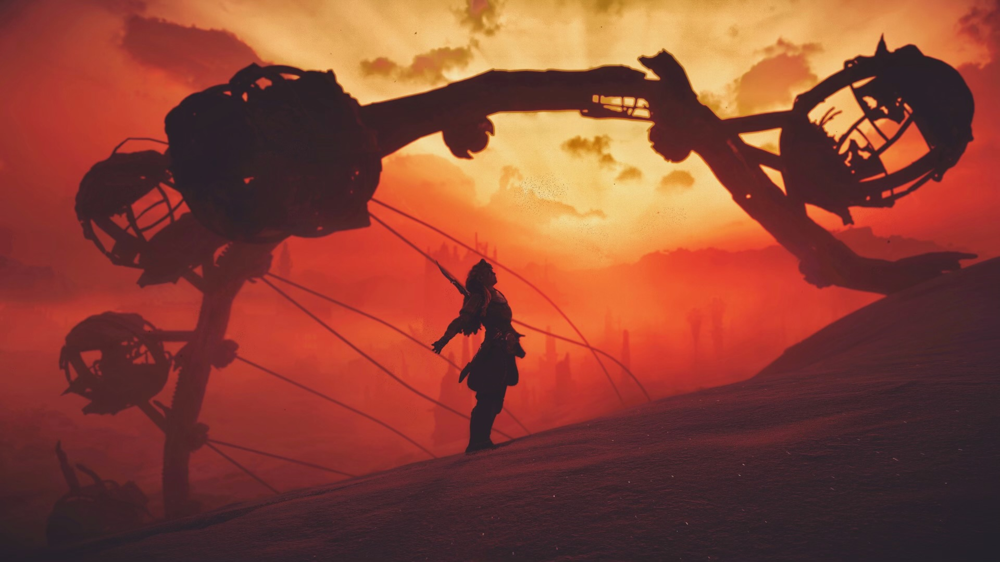
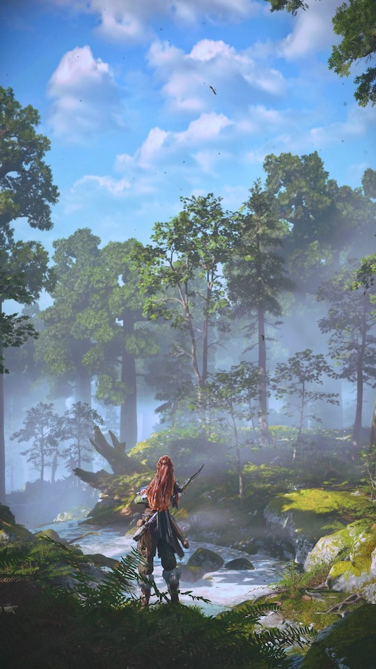
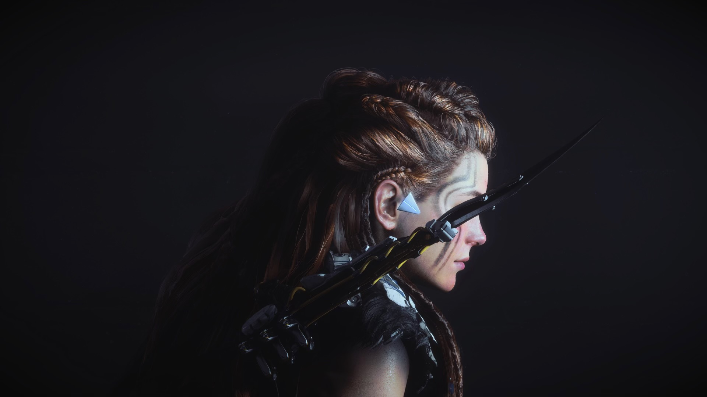

Horizon: Forbidden West
Horizon: Forbidden West's landscapes have a lovely softness much like a painting. Every inch of the bright and colorful environment invites the player to stop and admire the view. So I did.
Sounds from the game
I love the sci-fi elements of the Horizon games. This photo shows the failed technology of "The Old Ones". They flew too close to the sun and nearly destroyed the planet. I find it interesting that the planet ultimately survived and "The Old Ones" are nothing more than memory.
I was inspired by concept art for this shot. The light streaming through the trees and beautiful greenery covering the forest floor while Aloy takes a rest feels peaceful.
Another shot leaning into the sci-fi elements of the game. This shot looks other-worldly and is intended to peak the viewers interest.
This shot was inspired by concept art and was intended to look like a HFW trading card. I love Aloy's confident pose as it is true to character.
I wanted a unique take on a portrait. Aloy's spear conceals her eyes and adds a mysterious element to the shot.